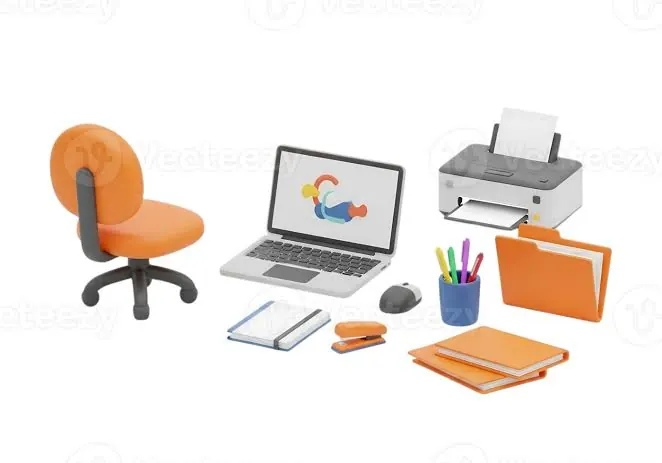
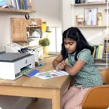

Laptops
Back-to-School Tech Checklist: The Printers and Laptops Every Student Needs
Prepare for the school year with a practical student technology checklist covering laptops, printers, accessories, software, safety and study habits.
Introduction
Starting a new academic year means new tasks, online tools, presentations and projects. Whilst having the correct tech can help you stay organised whilst studying, you don’t need to rush out and buy everything. The key is to get what will best support your course, learning style and budget.
You may need a laptop to help with your research, writing and online classes. A printer can be a good addition to help with worksheets, forms, notes and project resources. Some students may be able to use printers in their campus or shared printers. You can get some great accessories to help with comfort like a headset, mouse, storage and sleeve.
Use this list to identify what you really need. Firstly look at what your school/college requires. You may need certain software for your course.

1. Choose the correct laptop for your course
Look at what applications you’ll need. If you’re doing general subjects you’ll probably need a web browser, word processing, presentation tools, spreadsheets and video calling. This can often be done on a modern basic or mid range laptop. If you’re studying engineering, design, architecture, media production or computer science you may need something with some more powerful specs.
Before buying look at any official requirements for software. Look at what processor, ram, graphics, storage and operating systems are required. You may be able to get away with just the minimum requirements but if you can get the recommended requirements you’ll find it more comfortable. Don’t get a gaming laptop just because it has a powerful graphics card unless you need it for your course or personal use
If you’ll be using your laptop at home, in class, library and group work it’s best to get something lightweight. Look at how much your laptop and charger weigh, screen size and battery life. A 13/14 inch screen can be ideal if you’re travelling a lot. However, larger screens can be helpful if you’ll be working on detailed work.
2. Get enough ram and storag
Having more ram can help with multitasking. Many students will have a web browser, word processing, presentation, messaging app and learning platform all open. Having 16GB can be a great target if your budget allows. If you’re doing something less demanding you may be able to get away with less. If you’re studying a technical course you may need 16GB or more. If you’re doing technical work you may need 32GB or more.
An SSD can help your laptop boot up quickly and open apps quickly. If you’re using lots of apps and files look at how much storage you’ll need. 512GB is a good amount for many students. If you’re doing large media projects you may need more. Look at whether you’ll be able to upgrade your ram/storage. Some slimmer laptops have soldered ram so you’ll have to stick with what you bought.
Encourage your child to back up their work. They can use the approved cloud storage from their institution or an external drive. Ensure they have a way to get their files back.
3. Printer
If your child will be printing worksheets, reading, forms, diagrams and project drafts regularly a printer can be a great addition. However, this isn’t essential for everyone. Look at how easy it is to print on campus, local print shops and if there is a printer they can use at home.
If they are printing regularly look at getting an ink tank or laser printer. Ink tanks can be a good option if they need to print in colour regularly. Monochrome laser can be a good option for printing notes and assignments with lots of text. A cartridge inkjet can be a great option for occasional printing. Just ensure they know how much the cartridges will cost to replace and follow the manufacturers guidelines.
An all in one printer can be a great option as you’ll be able to scan and copy. Look at whether they have Wi-Fi, mobile printing, correct paper sizing and automatic double sided printing. Work out how much it will cost to print with the consumables.
4. Ink/Toner and Paper
Before buying a printer look at what type of ink/toner it requires. Look at how much it will cost and how many pages you’ll be able to print. The page yields shown are based on standard testing. The actual pages you’ll be able to print will depend on how much of the page is covered and what settings you use. If you’re printing work with lots of colour or photos you’ll use more ink.
Ensure you have the correct paper in a dry place. Follow the printer guidelines for loading paper. If you’re printing photos, labels or thick paper ensure you have the correct setting. If you’re printing general notes standard paper may suffice. If you’re printing long documents ensure you have double sided printing.
Avoid using incorrect cartridges or refilling. Ensure they are using the correct cartridges for the exact printer. Buy from a company that provides clear information on their products.
5. Useful accessories
Having a few accessories can make your child more comfortable whilst studying. A laptop sleeve or padded rucksack can help protect their laptop. A wireless or wired mouse can be useful for spreadsheets, design and long study sessions. A headset with a mic can be useful for online classes and group calls.
If they have a laptop with few ports a USB-C hub or docking station can be helpful. Ensure it’s compatible. If they’re using external screens ensure they have the correct video output. An external storage can be a good backup. Just ensure it’s used carefully.
A laptop stand and separate keyboard can make their desk more ergonomic. Don’t buy any accessories just because they come with the device. Know what they actually need and look at the spec of their laptop.
6. Essential software and security
Ensure their laptop is set up. Update the operating system, install an up-to-date web browser, required applications and course specific software from official sources. Ensure they have student licences or online tools from their institution
Install a trusted security option. Ensure the operating system and applications are up to date. Lock the screen and use multi factor authentication. Don’t install any pirated software, unknown extensions to their web browser or any apps that have been promoted through dodgy pop ups. This can cause malware or give away personal information.
Ensure they have a logical folder system for each subject and semester. Give them clear names and regularly save drafts. Save any important work to an approved cloud location or external backup. A good digital system can be just as useful as new hardware.
7. Comfortable workspace
Ensure they have a sturdy desk and chair. Position their screen at the correct height. Try to avoid glare from windows or overhead lighting. Ensure they have good airflow around the laptop. Don’t use their laptop on a bed or soft surface as it can overheat.
Ensure your printer is on a flat surface. Ensure there is plenty of space to open the trays and lids. Keep paper and supplies away from damp and direct heat. Ensure cables aren’t tripping hazards. If they have multiple devices connected to the same socket ensure they are using safe equipment and the correct rating
Try to create a good study environment. Take regular breaks and have a plan in place for notifications.
8. Protect your devices
If possible use a strong unique password/passkey. Use multi factor authentication for important accounts. Ensure their devices are safe in classrooms, libraries and public areas. Don’t leave their laptop unattended.
Regularly back up their assignments and project files. If their device goes missing or gets damaged they won’t lose weeks of work if they have a recent backup. Know what the rules are for storing personal data, research and exam documents. Use approved platforms to share files with their peers and teachers.
If they’re using family computers try to set up different profiles.
9. Budget for your child’s tech
Start with listing what they’ll need. A suitable laptop, required software, necessary accessories and maybe a printer. Work out how much they’ll need to spend on consumables. Ink/toner for the printer, paper, cloud storage and software. If they don’t have a sleeve or backup ensure they have these.
Look at similar devices with the same spec and warranty. Some students may be able to get a refurbished device. Be careful to check the battery health, condition, returns policy and warranty. Don’t get an expensive device if they don’t need it for their course.
Ask the school/college if they have any recommendations for devices, software, printing and support. This can save you money.
10. Good maintenance habits
Ensure their laptop is up to date. Keep food and drinks away from the keyboard. Use a padded bag to transport. Clean the screen using appropriate materials. Ensure the cooling vents aren’t blocked. If their device is getting excessively hot, making strange noises or freezing regularly back up their files and look into the issue.
Ensure their printer is loaded with paper correctly. Use compatible consumables and follow the maintenance instructions for the model. If their prints aren’t as good as they used to be use the inbuilt checks. If they have ongoing issues seek professional help. If they’ve had any liquid damage, swollen batteries or electrical issues.

Conclusion
You don’t need to spend a fortune to create a useful back to school tech setup. Choose a laptop that suits their course, get enough ram and storage, decide if they need a personal printer and buy accessories that will help solve their issues. Set up their software, security, backup and workspace.
The best thing to do is get something that will help them throughout the year and keep within their budget. Ensure you look at what the institution requires and overall cost of ownership.
Need a hand with your printer or laptop?
Printerworld sells printers, laptops and genuine supplies, and repairs and services both. Bring in your model number and we will help you get it right.